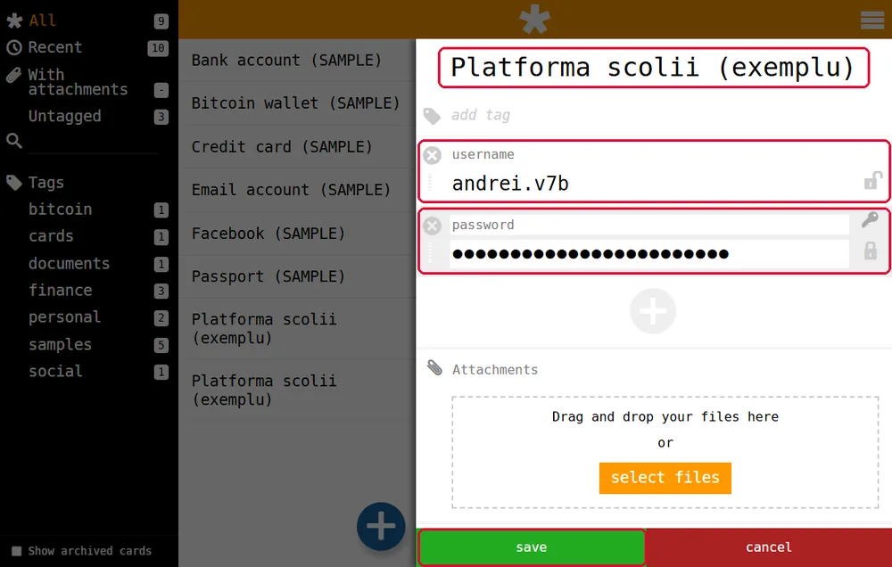
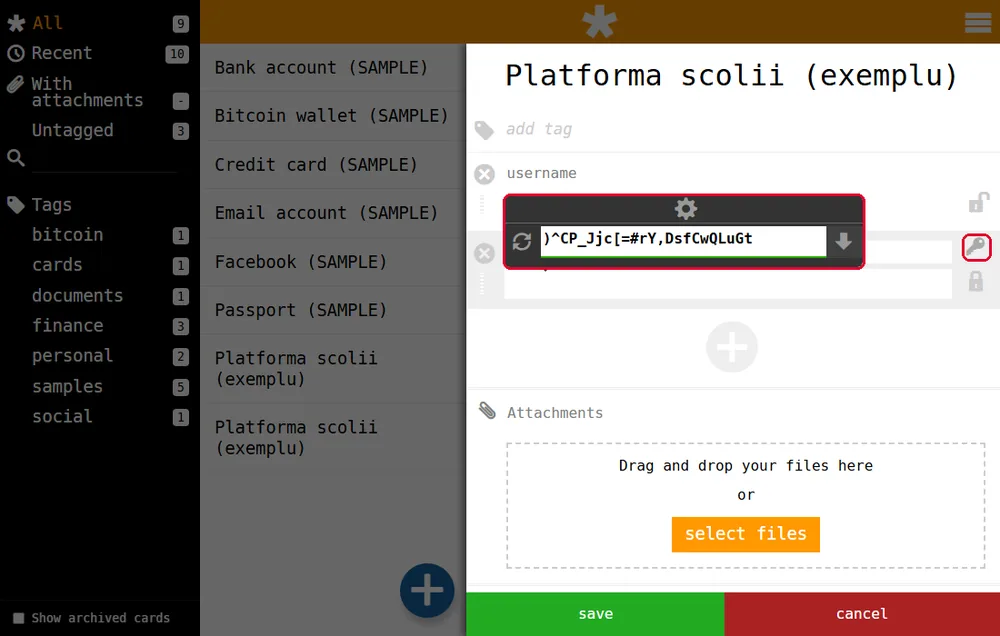
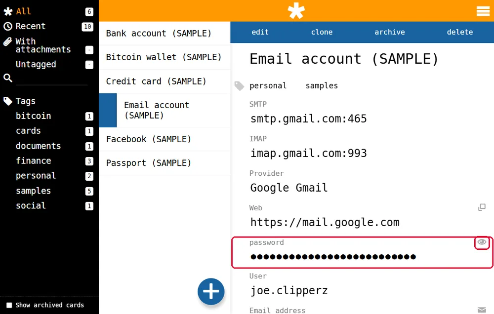

Prima parolă în seif
La finalul paginii vei putea să pui o parolă în seif, să lași seiful să inventeze una și să copiezi o parolă fără s-o arăți pe ecran.
Ce trebuie să știi
- Ce este un seif de parole. Vezi pagina 1, pasul 2.
- Cum intri în seif cu numele de utilizator și fraza de acces. Vezi pagina 3, pasul 7.
- Butonul + și fișele de exemplu (SAMPLE). Vezi pagina 3, pasul 6.
- Cum copiezi și lipești: Ctrl+C copiază, Ctrl+V lipește. Le-ai învățat la informatică, la copiere și lipire.
1O fișă pentru fiecare cont
O fișă (card) este o intrare din seif pentru un singur cont. Are un titlu, un nume de utilizator și o parolă. Pentru platforma școlii faci o fișă, pentru jocul educativ faci alta.
Fișele de exemplu, cele cu (SAMPLE), le poți șterge. Deschizi fișa și apeși delete (șterge), în bara albastră de sus.
2Adaugi o fișă
- Apeși butonul rotund albastru cu +, jos în listă.
- Sus, în locul titlului, scrii numele contului. De exemplu: „Platforma școlii”.
- În câmpul
usernamescrii numele tău de utilizator de pe platformă. - În câmpul
passwordscrii parola primită de la profesor. - Apeși butonul verde
save(salvează), jos.

Uite cum: Titlu: Platforma școlii · username: andrei.v7b · password: parola primită. Apoi save. În listă apare fișa „Platforma școlii”.
3Seiful poate inventa parola în locul tău
Când îți faci un cont nou undeva, nu mai trebuie să inventezi tu parola. O inventează seiful:
- în fișa nouă, apeși cheița din dreapta câmpului
password; - apare o casetă cu o parolă lungă, făcută la întâmplare;
- apeși săgeata în jos din casetă, ca parola să intre în câmp;
- apeși
save.

O astfel de parolă nu trebuie ținută minte. O ține seiful pentru tine.
4Cum folosești parola, fără s-o arăți
Când ai nevoie de parolă, deschizi fișa. Parola e ascunsă sub buline. Ai două gesturi:
- Un clic pe bulinele parolei o copiază, ca atunci când apeși Ctrl+C. Parola rămâne ascunsă pe ecran.
- Ochiul din dreapta o afișează. La școală nu îl folosi: o vede colegul de lângă tine.
Memoria de copiere (în engleză, clipboard) este locul unde calculatorul păstrează ce ai copiat, până lipești cu Ctrl+V. Parola copiată stă acolo. Pe platforma școlii faci clic în câmpul pentru parolă și apeși Ctrl+V.

Parola rămâne în memoria de copiere și după ce ai lipit-o. La final copiază un cuvânt obișnuit (de exemplu, „tema”). Așa parola e înlocuită și nu mai poate fi lipită de altcineva.
Nu am înțeles — explică-mi altfel
Memoria de copiere e ca buzunarul de la geacă. Clic pe parolă = o pui în buzunar, fără s-o arăți nimănui. Ctrl+V = o scoți din buzunar și o pui unde trebuie. Dacă pleci fără să golești buzunarul, cine ia geaca găsește parola. Copiind cuvântul „tema”, pui altceva în buzunar.
Încearcă
Exercițiu. Pune în ordine pașii pentru o fișă nouă:
- (a) apeși
save; - (b) apeși butonul rotund cu +;
- (c) scrii numele de utilizator și parola;
- (d) scrii titlul fișei.
Verifică răspunsul
Ordinea: b, d, c, a. Întâi deschizi fișa nouă cu +, apoi îi dai un titlu, apoi completezi datele, iar la final salvezi.
Încă un exercițiu. Ești în laborator și ai nevoie de parola platformei. Cum o iei din fișă fără ca Ioana, de lângă tine, s-o vadă?
Verifică răspunsul
Faci clic pe bulinele parolei: se copiază și rămâne ascunsă. Nu apeși pe ochi. Apoi o lipești cu Ctrl+V. La final copiezi un cuvânt obișnuit, ca parola să nu rămână în memoria de copiere.